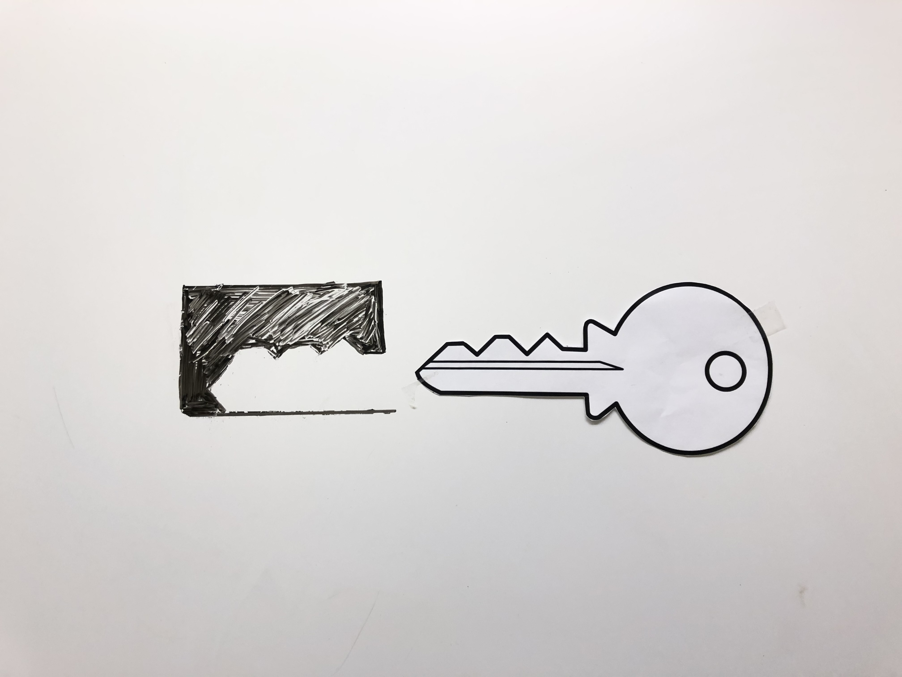
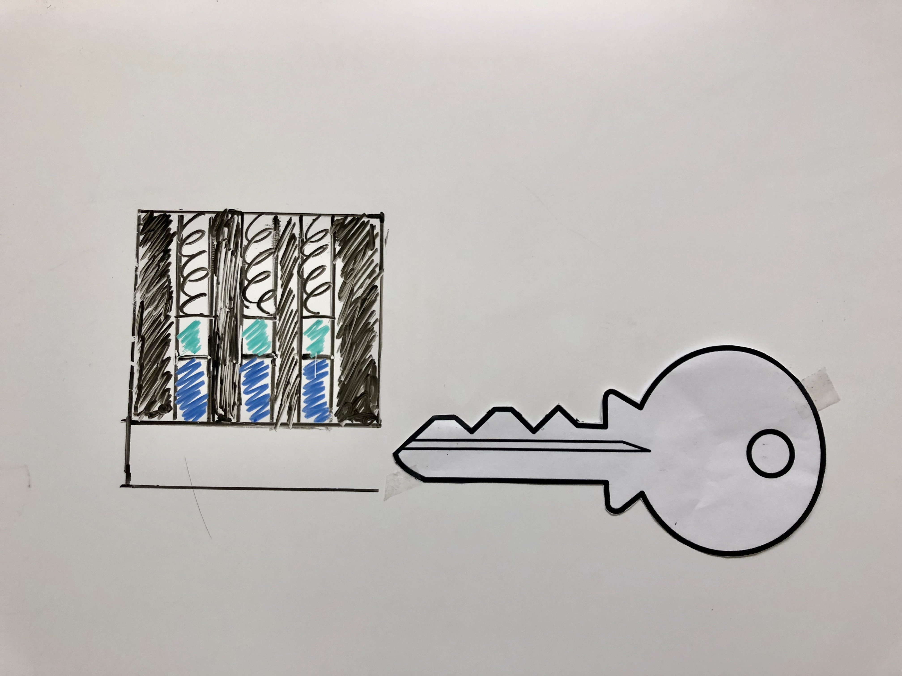
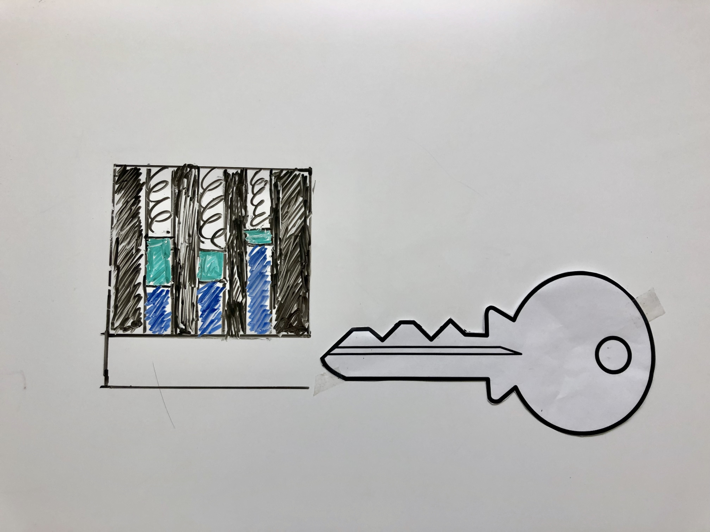
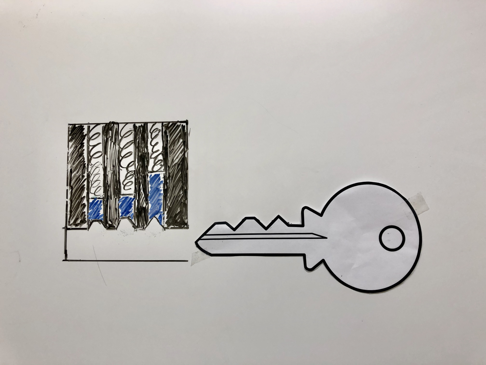

1. Introduction
2. Pre-Test
3. Video: Pin Tumbler Lock Components
4. Formative Assessment: Pin Tumbler Lock Components
5. Group Activity
6. Master Key Hypothesis
7. Video: Master Keys
8. Formative Assessment: Master Key
9. Post-Test Landing Page
10. Post-Test
1. Introduction
2. Pre-Test
3. Video: Pin Tumbler Lock Components
4. Formative Assessment: Pin Tumbler Lock Components
5. Group Activity
6. Master Key Hypothesis
7. Video: Master Keys
8. Formative Assessment: Master Key
9. Post-Test Landing Page
10. Post-Test
Pre-Test
1. Which one is the lock that matches the key?
A
B
C
D
Correct Answer:
BCorrect!
2. Below are the components of a pin tumbler lock. Select the corresponding correct name from the dropdown menu.

3. Given the structure of the lock, briefly explain what happens when we try to open a pin tumbler lock with a key.

Your answer should be something like: Each key has its own unique shape. The ridges on the key have to match exactly with the lock for it to work. When a key is inserted into the keyway, it pushes the key pins and the springs will compress. For the plug to turn, the pins must line up with the shear line.
4. What happens when we try to open a pin tumbler lock with a key?
Feedback:
Want to verify your answer? Continue to see the instructional video.The Inside of the Lock
Below are the components of a pin tumbler lock. Select the correct name of the part from the dropdown menu. If it's correct, the menu will turn green. Otherwise, it will turn red. You can try again if you get it wrong!
The Outside of the Lock
Now we'll start the group section.
Please ask your classmate to work with you on this computer.
Share with each other what you learned in your tracks about the pin tumbler lock components and mechanism.
How the Master Key System Works
The master key system is a system that allows two or more keys to open one lock. How does a master key work?
Your answer should be something like: A master key system will have one or more shafts with a spacer pin, so different pins in the shafts can be raised to the same level to open the lock.
Next is your post-test. Please clarify any remaining questions with your teammate before they return to their computer for their own post-test.
Post-Test
1. Which one is the lock that matches the key?
A
B
C
D
You answered A. This is incorrect.
It is the pins along the shear line - not the lock - that matches the shape of the key.You answered B. This is correct!
When you insert the key into the keyway and turn it, the springs compress and the pins along each shaft align with the shear line, opening the lock.You answered C. This is incorrect.
The height of the key pins should match the ridges on the key. The three pins in this lock don't align along the shear line, and the lock won't open. height.You answered D. This is incorrect.
Each shaft is missing a driver pin. This is not a working pin tumbler lock.B is the correct answer.
When you insert the key into the keyway and turn it, the springs compress and the pins along each shaft align with the shear line, opening the lock.2. Below are the components of a pin tumbler lock. Select the corresponding correct name from the dropdown menu.
3. What happens when we try to open a pin tumbler lock with a key?
Feedback:
Want to verify your answer? Collaborate with your partner during the Group Activity.4. The master key system is a system that allows two or more keys to open one lock. How does a master key work?